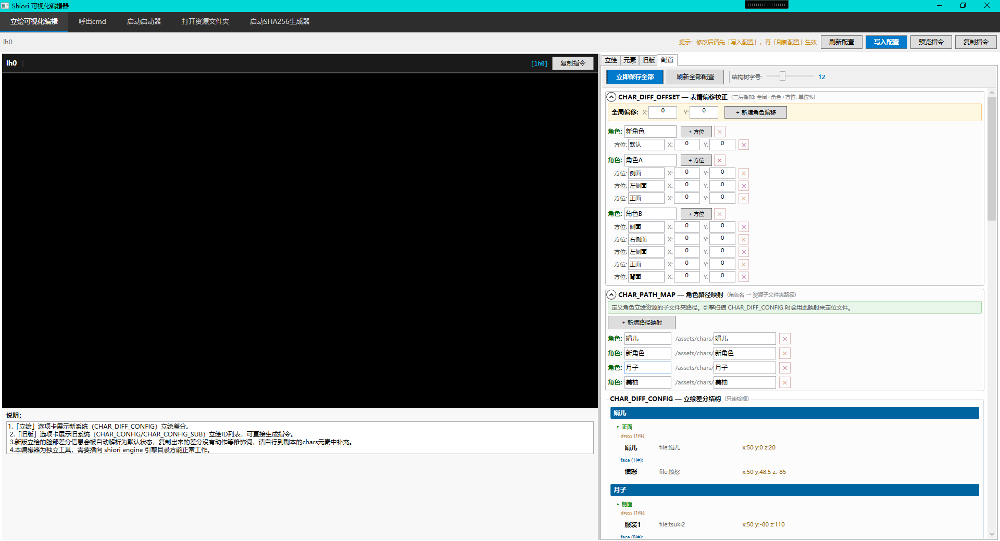

2026年8月22日 暂停更新公告
即日起，由于以下原因Shiori全系列产品将暂停更新：
- 由于本人在过去七个月内高强度的将生态内7个组件（包括维护这个网页）并行开发了数十个版本，感觉身心疲惫且灵感枯竭，这段时间是完全全职开发，经常熬夜到凌晨修bug加功能。后续也要和生活对线。因此需要一定的时间进行修整
- 其次，本人将会在接下来的日子里去更深入的学习kirikiri体系，并尝试接触NScripter、renpy等其他引擎（在发布此公告前已经成功解密与封包某款被加密魔改的NScripter游戏），等我有了灵感之后再恢复高强度的更新
- 并非完全停止日后的开发，只是暂停更新，你依旧可以通过已有的联系方式，如GitHub issue、wakudemo等方式向我留言，我会视反馈的问题的严重性给予相对应的补丁
- c++启动器也将同步搁置（实际上已经基本开发完毕，只是还有一些bug没修）
这不是一个终点，而是正在筹备一个新的开始。
如有不便，敬请谅解
Shiori 系列开发者：bilibili 月が綺麗ですね_ 敬上
2026年8月22日
2026年8月2日
Shiori Editor 可视化编辑器V0.1.0测试版发布GitHub
2026年7月28日
全力研发可视化编辑器，目前可视化编辑器已经在立绘编辑部分基本完工，并且与生态其他周边工具一体化沟通与启动。比起昨日在GitHub公布的预览截图中，新增了非常多的功能。以下所有图片均为开发中的示例图，数据均为开发时使用的测试数据，请以实际上线为准。

在新版立绘系统中添加的编辑细节部分

在旧版立绘系统中的细节部分，该部分此前并未在GitHub中公布

以及完全新增的“配置”页面部分
2026年7月27日
与引擎核心V2.1.6版本发布的同时，在GitHub宣布C++版本启动器以及可视化编辑器（Shiori Editor）正式立项
2026年7月6日
随着管理器V1.0.4版本发布，Shiori Signer校检器正式于本日发布GitHub,次日，用于补丁专用的Shiori Package诞生。但由于其特殊性并未公布于GitHub
2026年6月22日
Shiori Game Manager首发上线GitHub
2026年5月25日
高级立绘系统上线，可以通过拼接差分以更好的节省美术资源
2026年5月14日
启动器的第二次重大变更，全面取代python启动器，全量迁移至C#
2026年5月9日
启动器进行第一次重大变更，技术栈迁移到python，拉起独立的运行窗口，彻底消除不同浏览器带来的兼容性差异
2026年4月20日
引擎本体及生态工具正式上线wakudemo应用商店
2026年4月15日
本引擎目前最精细化，行级恢复的最高级存档系统页面archive.html上线
2026年4月8日
随着引擎核心V1.0.8版本的发布，正式将本系列作品命名为“Shiori”，由日语“栞（しおり）”的罗马音而来。后续产品命名也是以“Shiori XXX”为代表
2026年3月2日
Shiori Engine核心正式在Github发布V1.0.0版本，于次日发布最初V1.0.1版本启动器，这个时候的启动器只能拉起默认的外部浏览器，承接一个转换http协议的功能。
2026年2月22日
受到Kirikiri引擎的启发，Shiori Engine引擎正式立项开发，技术栈选用标准的html/css/js为载体，直接拉起外部浏览器以运行游戏。全程独立开发，尝试做起一个属于自己的galgame生态软件。